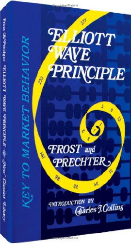

Key to Market Behavior
By A.J. Frost & Robert R. Prechter, Jr.
· 1978 (10th Ed. 2005) · 256 pages
Impulse: A five-wave motive pattern (5-3-5-3-5) where wave 4 does not overlap wave 1. The most common form of market progress.
Diagonal: A wedge-shaped five-wave motive pattern (3-3-3-3-3) where waves overlap. Ending diagonals appear at wave 5 or C positions; leading diagonals appear at wave 1 or A.
Zigzag: A sharp three-wave correction (5-3-5) labeled A-B-C. Wave B does not reach the start of wave A.
Flat: A sideways three-wave correction (3-3-5) labeled A-B-C. Wave B retraces at least 90% of wave A. Three varieties: regular, expanded, and running.
Triangle: A five-wave sideways correction (3-3-3-3-3) labeled A-B-C-D-E within converging or diverging boundary lines. Varieties: contracting, barrier, expanding, and running.
Extension: An elongated impulse with exaggerated subdivisions in one of the three motive waves, producing a nine-wave count of similar-sized waves.
Truncation: When the fifth wave fails to exceed the end of the third wave. Often follows a particularly powerful third wave. Signals dramatic reversal ahead.
Motive Wave: Any five-wave pattern that moves in the same direction as the trend of one larger degree. Includes impulses and diagonals.
Corrective Wave: Any three-wave pattern (or combination thereof) that moves against the trend of one larger degree. Corrections are never fives.
Alternation: The guideline that if wave 2 is a sharp correction, wave 4 will be a sideways correction, and vice versa.
Channeling: The technique of drawing parallel trend lines connecting wave endpoints to project targets for subsequent waves within an impulse.
Throw-over: A brief penetration of the upper parallel channel line during a fifth wave, typically confirmed by immediate reversal back inside the channel.
Orthodox Top/Bottom: The end of the wave pattern, which may differ from the actual price extreme. Ratio analysis and forecasting use orthodox endpoints.
Wave Degrees (largest to smallest): Grand Supercycle, Supercycle, Cycle, Primary, Intermediate, Minor, Minute, Minuette, Subminuette. Each degree subdivides into the next smaller in the same 5-3 pattern.
Phi (φ): The Golden Ratio, approximately .618034 (or its inverse 1.618034). The only number whose reciprocal equals itself minus one. Key ratios: .236, .382, .500, .618, .786, 1.000, 1.618, 2.618.
In the 1930s, Ralph Nelson Elliott discovered that stock market prices trend and reverse in recognizable patterns. The patterns he discerned are repetitive in form but not necessarily in time or amplitude. He isolated five such patterns, or “waves,” that recur in market price data, named and illustrated them, and described how they link together to form larger versions of themselves in a structured progression he called The Wave Principle. Elliott had been working in Mexico but fell ill with anemia, retired to a rocking chair in California, and turned his disciplined mind to studying charts of the Dow Jones Industrial Average. With the Dow near 100, he predicted a great bull market that would exceed all expectations — at a time when most investors felt it impossible the Dow could even reach its 1929 peak.
The Wave Principle is not primarily a forecasting tool but a detailed description of how markets behave. It provides a context for market analysis — a framework for disciplined thinking and a perspective on the market’s general position and probable path. The market has a law of its own. It is not propelled by external causality or news. The path of prices is not a product of current events nor is the market a cyclically rhythmic machine. Its movement reflects a repetition of forms that is independent of presumed causal events and of periodicity.
In markets, progress ultimately takes the form of five waves. Three of these — waves 1, 3, and 5 — actually effect the directional movement. They are separated by two countertrend interruptions, waves 2 and 4, which are a requisite for overall directional movement to occur. Elliott noted three consistent aspects of the five-wave form: wave 2 never moves beyond the start of wave 1; wave 3 is never the shortest wave; wave 4 never enters the price territory of wave 1. These three statements are rules — they govern all waves and are never broken.
There are two modes of wave development: motive and corrective. Motive waves have a five-wave structure and impel the market powerfully. Corrective waves have a three-wave structure (or a variation thereof) and appear as partial retracements of the preceding motive wave. The essential underlying tendency is that action in the same direction as the larger trend develops in five waves, while reaction against the larger trend develops in three waves, at all degrees of trend.
When an initial eight-wave cycle ends, a similar cycle follows, producing a five-wave pattern of one degree larger. This five-wave pattern is then corrected by a three-wave pattern of the same degree, completing a larger full cycle. The process of building to greater degrees continues indefinitely, and the reverse process of subdividing into lesser degrees continues as well. The number of waves at each degree of subdivision follows the Fibonacci sequence: 1 + 1 = 2, 5 + 3 = 8, 21 + 13 = 34, 89 + 55 = 144 — all Fibonacci numbers.
Why five waves to progress and three to regress? Elliott himself never speculated on this, simply noting it was what happened. But the answer is elegant: one wave does not allow fluctuation; three waves of unqualified size in both directions would not allow progress. Five waves in the trend direction plus three waves countertrend is the minimum requirement for achieving both fluctuation and progress. Nature typically follows the most efficient path.
Elliott named nine degrees of waves, from Grand Supercycle down to Subminuette. The authors extended this to fifteen degrees, adding Supermillennium, Millennium, and Submillennium at the top and Micro, Submicro, and Miniscule at the bottom. A standardized labeling system uses alternating sets of Roman/Arabic numerals for motive waves and upper/lower case letters for corrective waves, so a quick glance at any chart reveals its approximate time scale.
The most common motive wave is an impulse. In an impulse, wave 4 does not enter the price territory of wave 1 (the “no overlap” rule), and wave 3 is never the shortest actionary wave. The actionary subwaves (1, 3, and 5) are themselves motive, and subwave 3 is always an impulse. A rule is absolute; a guideline is a strong tendency. In many years of practice, the authors found only one or two instances above Subminuette degree where all other rules and guidelines combined to suggest that a rule was broken.
Most impulses contain what Elliott called an extension — an elongated impulse with exaggerated subdivisions. Only one of the three actionary subwaves typically extends. The extended wave’s subdivisions are nearly the same amplitude and duration as the other four waves, giving a total count of nine waves of similar size rather than the normal five. In the stock market, wave 3 is the most commonly extended wave. If waves 1 and 3 are about equal length, the fifth wave will likely be a protracted surge. Conversely, if wave 3 extends, the fifth should be simply constructed and resemble wave 1.
Figure 1-8 is perhaps the single most useful guide to real-time impulse wave counting. When the apparent wave 3 is proved unacceptable (too short, or wave 4 overlaps wave 1), the correct labeling almost always shows an extended wave (3) in the making. Do not hesitate to get into the habit of labeling the early stages of a third wave extension — the exercise will prove highly rewarding, as the discussion of Wave Personality in Chapter 2 will make clear.
Elliott used the word “failure” to describe a situation in which the fifth wave does not move beyond the end of the third. The authors prefer the less connotative term truncation. A truncation can usually be verified by noting that the presumed fifth wave contains the necessary five subwaves. It often occurs following a particularly strong third wave. The U.S. stock market provides two examples since 1932: October 1962 at the time of the Cuban missile crisis, and year-end 1976.
Fifth wave extensions, truncated fifths, and ending diagonals all imply the same thing: dramatic reversal ahead. At some turning points, two of these phenomena have occurred together at different degrees, compounding the violence of the next move in the opposite direction.
A diagonal is a motive pattern that has two corrective characteristics: wave 4 almost always moves into the price territory of wave 1 (overlap), and all waves are “threes” (3-3-3-3-3). An ending diagonal occurs primarily in the wave 5 position when the preceding move has gone “too far too fast.” It takes a wedge shape within two converging lines and signals exhaustion of the larger movement. A rising ending diagonal is usually followed by a sharp decline retracing at least to where it began.
A leading diagonal has recently come to light in the wave 1 position of impulses and wave A of zigzags. Its subdivisions appear to be 3-3-3-3-3 (though some cases show 5-3-5-3-5). It is typically followed by a deep retracement. Analysts must be careful not to mistake a leading diagonal for the far more common pattern of a series of first and second waves of increasing degree.
Markets move against the trend of one greater degree only with a seeming struggle. Corrective waves are more varied and less clearly identifiable than motive waves. The single most important rule: corrections are never fives. Only motive waves are fives. An initial five-wave movement against the larger trend is therefore never the end of a correction, only part of it.
Corrective processes come in two styles: sharp corrections angle steeply against the larger trend, while sideways corrections produce a net retracement but with an overall horizontal appearance. The three main corrective categories are zigzag, flat, and triangle, plus combinations (double three and triple three).
A single zigzag is a simple three-wave declining pattern (in a bull market) labeled A-B-C with a 5-3-5 subwave sequence. The top of wave B is noticeably lower than the start of wave A. Occasionally zigzags occur twice or three times in succession, connected by an intervening “three” wave X, producing double or triple zigzags. These formations are analogous to extensions of impulse waves — the first zigzag is rarely large enough to constitute an adequate price correction, so it is doubled or tripled.
A flat correction differs from a zigzag in that the subwave sequence is 3-3-5. Since wave A lacks sufficient force to unfold into a full five waves, the B wave inherits this lack of countertrend pressure and terminates near the start of wave A. Wave C generally terminates just slightly beyond the end of wave A. Flats tend to occur when the larger trend is strong; the fourth wave frequently sports a flat while the second wave rarely does.
Three types of 3-3-5 corrections exist. In a regular flat, wave B ends near the start of A and wave C ends slightly past the end of A. In an expanded flat (the most common variety), wave B goes beyond the start of A and wave C ends substantially beyond the end of A — Elliott called this “irregular” though it is actually more common than “regular.” In a running flat (rare), wave B goes well beyond the start of A but wave C fails to reach the level where A ended, because the forces of the larger trend are so powerful that the pattern skews in the trend direction. Never label a correction as a running flat prematurely — you will be wrong nine times out of ten.
A triangle reflects a balance of forces, causing a sideways movement with decreasing volume and volatility. It contains five overlapping waves subdividing 3-3-3-3-3, labeled A-B-C-D-E. Three varieties exist: contracting (converging boundary lines), barrier (one horizontal line), and expanding (diverging lines). A triangle always occurs prior to the final actionary wave in the pattern of one larger degree — wave 4 in an impulse, wave B in an A-B-C, or the final wave X in a combination. The post-triangle wave (“thrust”) is swift and short, traveling approximately the distance of the widest part of the triangle.
Elliott called a sideways combination of two corrective patterns a “double three” and three patterns a “triple three.” Labeled W-X-Y (-X-Z), each component W, Y, or Z can be any zigzag, flat, or triangle, and the intervening wave X is typically a zigzag. Combinations appear to be the flat correction’s way of extending sideways action. The key difference from double/triple zigzags: zigzags aim for adequate price correction; combinations aim for adequate time/duration correction. Never more than one zigzag in a combination; never more than one triangle (and only as the final component).
The guidelines presented in this chapter are tendencies, not rules. They are nevertheless so reliable that the authors use them as tools of wave identification nearly as powerful as the rules themselves. Elliott went further than merely observing tendencies — he stated that alternation was virtually a law of markets.
The guideline of alternation warns the analyst to expect a difference in the next expression of a similar wave. If wave 2 of an impulse is a sharp correction (zigzag), expect wave 4 to be a sideways correction (flat, triangle, or combination), and vice versa. In corrective waves, if wave A is a flat, expect wave B to be a zigzag, and vice versa. Alternation does not say precisely what will happen — it gives valuable notice of what not to expect. As contrarians never cease to point out, the day most investors “catch on” to an apparent market habit is the day it will change to one completely different.
No market approach other than the Wave Principle gives a satisfactory answer to “How far down can a bear market go?” The primary guideline: corrections, especially fourth waves, tend to register their maximum retracement within the span of travel of the previous fourth wave of one lesser degree, most commonly near its terminus. The 1932 Supercycle low bottomed in the area of the Cycle degree fourth wave (an expanding triangle from 1890 to 1921). The 1942 bear ended in the area of the fourth Primary wave of 1932-1937. The 1962 plunge stopped just above the 1956 high. The 1974 Cycle wave IV bear dropped to the area of the previous fourth wave of lesser degree. This guideline is not a rule, but it works remarkably often.
Two of the three motive waves in a five-wave sequence tend toward equality in time and magnitude, especially when one wave is an extension. If perfect equality is lacking, a .618 multiple is the next likely relationship. The 1942-1966 Cycle wave advance illustrates: Primary wave 1 traveled 120 points (129% gain, 49 months) while Primary wave 5 traveled 438 points (80% gain — which is .618 × 129% — in 40 months).
Elliott noted that a parallel trend channel typically marks the upper and lower boundaries of an impulse wave, often with dramatic precision. The initial channeling technique: after wave 3 ends, connect points 1 and 3, then draw a parallel through point 2 to estimate the boundary for wave 4. After wave 4 ends, connect points 2 and 4 and draw a parallel through point 3 to estimate the wave 5 boundary (the “final channel”).
Elliott used volume as a tool for verifying wave counts and projecting extensions. Volume has a natural tendency to expand and contract with the speed of price change in bull markets. In a normal fifth wave below Primary degree, volume tends to be less than in the third wave. If volume in an advancing fifth wave equals or exceeds that in the third, an extension of the fifth is in force. At Primary degree and higher, volume in an advancing fifth wave tends to be higher merely because of the natural long-term growth in the number of market participants.
The idea of wave personality is a substantial expansion of the Wave Principle. Each wave in the Elliott sequence reflects the mass psychology it embodies. The progression from pessimism to optimism and back follows a similar path each time, producing similar circumstances at corresponding points in the wave structure. Market history repeats but not exactly — related waves have similar characteristics but no wave has a twin.
“B waves are phonies. They are sucker plays, bull traps, speculators’ paradise, orgies of odd-lotter mentality or expressions of dumb institutional complacency. They often involve a focus on a narrow list of stocks, are rarely technically strong, and are virtually always doomed to complete retracement by wave C.” — Frost & Prechter
First waves are often part of a basing process, heavily corrected by wave 2. Second waves retrace so much of wave 1 that most profits are eroded; investors become convinced the bear is back; these waves end on dried-up volume. Third waves are “wonders to behold” — strong, broad, unmistakable, generating the greatest volume and price movement. Fourth waves are predictable by alternation with wave 2; lagging stocks build tops. Fifth waves are always less dynamic than thirds in breadth; optimism runs extremely high despite narrowing participation.
A waves of bear markets: the public is generally convinced the decline is just a pullback before the next advance. C waves are devastating — third waves in character, relentless, with no place to hide except cash. E waves in triangles appear to be dramatic kickoffs of new downtrends but are actually ending waves, attended by the same psychology as fifth waves.
Chapter 2 concludes with a comprehensive summary of all rules and guidelines for each wave type. This section spans pages 86-91 and serves as the definitive reference for Elliott wave practitioners. The distinction between rules (which govern all waves and are never broken) and guidelines (typical tendencies with immense practical value) is critical. Rules narrow infinite possibilities to a relatively small list; flexibility within the patterns eliminates cries that what the market is doing is “impossible.”
The Wave Principle is not a trading system but an unparalleled basis for creating one. It provides a built-in objective method for placing stops: a pattern is either over or it isn’t. The best interpretation (the “preferred count”) satisfies the largest number of guidelines. Alternative interpretations are ordered accordingly. Always invest with the preferred count, but maintain the “alternate count” — if the market violates the expected scenario, the alternate puts unexpected action into perspective immediately.
“When you have eliminated the impossible, whatever remains, however improbable, must be the truth.” — Sherlock Holmes (Arthur Conan Doyle, The Sign of Four)
Despite all your knowledge and skill, nothing can fully prepare you for risking your own money in the market. Paper trading won’t do it. Simulation games won’t do it. Analysis and making money are two different skills. The authors’ advice: set aside a specific amount significantly less than your total net worth, expect to lose it all at first, investigate the reasons for your losses, and eventually conquer your emotions so that reason prevails.
The Fibonacci sequence was discovered (actually rediscovered) by Leonardo Fibonacci da Pisa, the greatest mathematician of the Middle Ages. Born around 1170-1180, he traveled with his merchant father throughout the Mediterranean and published Liber Abacci (Book of Calculation), which introduced the Hindu-Arabic decimal system to Europe — one of the greatest mathematical discoveries of all time. Frederick II, Holy Roman Emperor, visited Pisa in 1225 specifically to meet Fibonacci and pose mathematical problems to him.
The famous rabbit breeding problem from Liber Abacci generates the Fibonacci sequence: 1, 1, 2, 3, 5, 8, 13, 21, 34, 55, 89, 144, and so on to infinity. Each number is the sum of the two preceding numbers. The sequence has a remarkable property: after the first several numbers, the ratio of any number to the next higher approaches phi (φ) = .618034..., and to the next lower approaches 1.618034... Phi is the only number whose reciprocal equals itself minus one: 1 ÷ .618 = 1.618.
The Golden Ratio (1.618 or .618) is known as the Golden Mean. Its proportions are pleasing to the eye and ear and appear throughout biology, music, art, and architecture. William Hoffer wrote in Smithsonian Magazine (1975): “The proportion of .618034 to 1 is the mathematical basis for the shape of playing cards and the Parthenon, sunflowers and snail shells, Greek vases and the spiral galaxies of outer space.” Music: the piano has 8 white keys and 5 black ones (13 total); the major sixth vibrates at a ratio of .625 — a mere .007 from exact phi.
The Golden Spiral — a logarithmic spiral that grows without changing shape — is constructed by connecting quarter-circle arcs within nested Golden Rectangles. It appears in pine cones, nautilus shells, hurricanes, whirlpools, galaxies, DNA molecules, and the arrangement of seeds on a sunflower head. Nature uses the Golden Ratio in its most intimate building blocks and its most advanced patterns, from microtubules in the brain to planetary distances and periods.
The Golden Section divides any length so that the ratio of the smaller part to the larger equals the ratio of the larger to the whole — always .618. The human body is a tapestry of Golden Sections: the navel divides height at approximately .618. Plato considered phi “the most binding of all mathematical relations” and the key to the physics of the cosmos. Kepler called it a description of “virtually all of creation.” The Golden Rectangle has sides in the proportion 1.618 to 1 and can be constructed from a simple 2×2 square using the Pythagorean theorem. Da Vinci attributed great meaning to this ratio: “If a thing does not have the right look, it does not work” — a statement that applies equally to wave analysis.
The Golden Spiral is constructed by connecting quarter-circle arcs within nested Golden Rectangles. It is a logarithmic (equiangular) spiral that grows without changing shape — an emblem of the law of nature representing endless expansion and contraction governed by a static law, the 1.618 ratio. The epeira spider spins its web in a logarithmic spiral. Bacteria grow at an accelerating logarithmic rate. Comets curve away from the sun in logarithmic spirals. Pine cones, nautilus shells, hurricanes, whirlpools, and the galaxies of outer space all take this form. Even atomic particles in a bubble chamber trace logarithmic spirals.
Pythagoras chose the five-pointed star — in which every segment is in golden ratio to the next smaller — as the symbol of his mathematical Order. The celebrated seventeenth-century mathematician Jacob Bernoulli directed that the Golden Spiral be etched into his headstone. Isaac Newton had the same spiral carved on the headboard of his bed. The architects of the Gizeh pyramid encoded phi in its construction nearly 5,000 years ago: the half-base times phi equals the slant height, and the height squared equals the face area. The continual occurrence of Fibonacci numbers and the Golden Spiral in nature explains precisely why the proportion of .618 to 1 is so pleasing in art: man can see the image of life in art that is based on the Golden Mean.
The Fibonacci sequence governs the number of waves that form in stock price movement. The simplest expression of a correction is one line (down); of an impulse, one line (up). Together = 2 lines. At the next degree of complexity: 3 + 5 = 8 waves. Then 13 + 21 = 34; 89 + 55 = 144. Even the ordered structural complexity of Elliott wave forms follows Fibonacci: 1 basic form, 2 modes, 3 orders of simple patterns, 5 families, 13 variations, 21 total pattern families. The fact that waves produce the Fibonacci sequence reveals that man’s collectively expressed emotions are keyed to this mathematical law of nature.
Ratio analysis assesses the proportionate relationship, in time and amplitude, of one wave to another. Robert Rhea, the great Dow Theorist, discovered (without knowing it) in 1934 that the total of all secondary reactions in nine bull markets retraced exactly 62.1% of the net advance — a Fibonacci ratio. Bear markets ran 61.1% of the time required for bull periods. The amplitude of virtually every wave is related to an adjacent, alternate, or component wave by a ratio between Fibonacci numbers.
Sharp corrections (zigzags, wave 2) tend to retrace 61.8% or 50% of the preceding wave. A leading diagonal in wave 1 is typically followed by a 78.6% retracement. Sideways corrections (flats, triangles, wave 4) tend to retrace 38.2%. These are merely tendencies, and the more precise and reliable relationships are between alternate waves or lengths unfolding in the same direction.
When wave 3 is extended, waves 1 and 5 tend toward equality or a .618 relationship. All three motive waves are related by equality, 1.618, or 2.618 (and inverses). Wave I of the Grand Supercycle (1932-1937) gained 371.6%, while wave III (1942-1966) gained 971.7% = exactly 2.618 times wave I. Unless wave 1 extends, wave 4 often divides the impulse into the Golden Section — .382 of the total distance when wave 5 is not extended, .618 when it is.
Hamilton Bolton (1957) forecast DJIA to 1000 based on the 1949-1956 advance of 361 points × 1.618 = 583 points, added to the 1957 low of 416. The year 1966 proved this to be one of the most accurate predictions in stock market history: the 3:00 PM hourly reading on February 9th registered 995.82, and the intraday high was 1001.11. Bolton was right to within 3.18 DJIA points — less than one-third of one percent error over a six-year forecast.
All degrees of trend operate in the market at the same time. At any given moment, the market is full of Fibonacci ratio relationships with respect to the various wave degrees unfolding simultaneously. It follows that future levels which create several Fibonacci relationships have a greater likelihood of marking a turn than a level that creates only one. If a .618 retracement of Primary wave 1 by Primary wave 2 gives a particular target, and within it a 1.618 multiple of Intermediate wave A gives the same target for Intermediate wave C, and within that a 1.00 multiple of Minor wave 1 gives the same target for Minor wave 5 — you have a powerful argument for expecting a turn at that calculated price level.
Bolton’s advice on ratio analysis was characteristically direct: “Keep it simple.” The authors agree that form analysis must always take precedence over ratio analysis. Ratios between lengths based on orthodox pattern termination levels are reliable; those based on nonorthodox price extremes generally are not. Despite the continual evidence of the importance of the .618 ratio, the basic reliance must be on form, with ratio analysis as evidence to support or challenge what you see in the patterns of movement.
Time is less reliable than price for forecasting, but durations and time relationships frequently reflect Fibonacci measurements. Elliott gave examples from Nature’s Law: 1921-1929 = 8 years; July 1921 to November 1928 = 89 months; September 1929 to July 1932 = 34 months. Prechter noted in March 1978 that the A-B-C decline from the October 1975 high would consume 1931 market hours — exactly .618 × the 3124 hours in the preceding advance — on April 17. The April 14 upside breakout and explosive April 17 volume (63.5 million shares) confirmed this projection.
Samuel T. Benner, an ironworks manufacturer ruined by the 1873 panic, published Business Prophecies in 1875. He discovered that market highs follow a repeating 8-9-10 year pattern (1902, 1910, 1919, 1929, 1937, 1946, 1956, 1964, 1973) and that panic lows follow a 16-18-20 year cycle. Both series fit Fibonacci number relationships, and the Benner-Fibonacci Cycle Chart has proved remarkably accurate over 170+ years of market history.
In September 1977, Forbes published “The Great Hamburger Paradox” by David Warsh, asking why prices explode for a century or more and then level off. Professors E.H. Phelps Brown and Sheila V. Hopkins of Oxford described how prices “obey one all-powerful law” for a century, then change abruptly. The authors identify this “all-powerful law” as the Golden Ratio governing nature’s laws, manifesting in the fabric of man’s physical, mental, and emotional structure. Human progress moves in sudden jerks and jolts, not the smooth clockwork of Newtonian physics. These shocks are part of the clockwork itself — a timing mechanism controlled by spasmodic jerks, whether mechanical or like a quartz crystal.
The stock market’s patterns are the same at all degrees. Patterns that show up in small waves using hourly plots show up in large waves using yearly plots. Figure 5-1 shows an hourly chart of the DJIA over ten days in 1962; Figure 5-2 shows a yearly plot of the S&P 500 from 1932 to 1978. Despite a time span difference of over 1500 to 1, both plots indicate similar patterns of movement. At each degree, the form is constant. The form we describe is primarily social, not individual. Individuals have free will and can learn to recognize typical patterns of social behavior and use that knowledge to their advantage.
The authors stress that assessing long-term waves serves two purposes: first, because the developments of the past serve greatly to determine the future; and second, because the same law that applies to the long term applies to the short term and produces the same patterns of behavior. Understanding where you are in the large wave structure provides essential context for every shorter-term decision.
The Millennium Wave traces one thousand years of commercial expansion from the Dark Ages. Rome’s fall (476 AD) began a five-century bear market. The Commercial Revolution (950-1350) sparked the first Grand Supercycle wave. The Elizabethan period (1520-1640) brought the Capitalist Revolution, followed by another Grand Supercycle correction. The current Grand Supercycle advance, coinciding with the Industrial Revolution and the rise of America as a world power, began around 1760-1789.
The Grand Supercycle from 1789 has unfolded in five Supercycle waves with an extended third — the most dynamic and progressive period of U.S. history. Wave (V) should be approximately equal to wave (I) in terms of time (~50 years) and percentage magnitude. Its height on the constant-dollar chart is about equal to the height of wave (V), expressing equality in terms of percentage advance.
Within the Grand Supercycle, Supercycle wave (V) from 1932 has produced five Cycle waves. Cycle wave I (1932-1937) was a clear five-wave sequence retracing .618 of the 1928-1930 decline. Cycle wave II (1937-1942) was a zigzag with most price damage occurring in wave A — wave C traveled only slightly into new low ground, showing great structural strength. Cycle wave III (1942-1966) was the extended wave, during which the Dow rose nearly 1000% in twenty-four years. Wave (3) within it was the longest Primary wave and itself an extension, and wave (4) was a flat alternating with the zigzag wave (2). Cycle wave IV (1966-1974) was an expanded flat in the Dow and a triangle in the broader NYSE and S&P indices, holding above the Cycle wave I peak as required by the rules.
The authors present a composite wave picture spanning from the Dark Ages to the present, showing the Millennium, Grand Supercycle, Supercycle, and Cycle degrees nested within each other. One provocative implication: the entire five thousand years of recorded civilization might constitute a developing wave of Epochal degree, suggesting that some period of social catastrophe centuries hence “will ultimately ensure the occurrence of the largest human social regress in five thousand years.” Whether or not one accepts this far-reaching speculation, the nested wave structure from hourly to millennium time scales remains one of the most elegant demonstrations of fractal geometry in the financial literature.
Cycle wave IV (1966-1974) demonstrated the depth-of-correction guideline beautifully. The expanded flat in the Dow (and triangle in the broader indices) held above the Cycle wave I peak of 1937 — an absolute requirement under the Wave Principle’s rules. Its terminus in December 1974 precisely met the guideline of correcting into the area of the previous fourth wave of one lesser degree. With Cycle wave V underway from 1974, the authors position the reader at the most critical juncture in the Supercycle: the beginning of the final advance that will complete the entire Grand Supercycle wave from 1789.
The art of managing investments is the art of timing — when to make a move is more important than what issue to choose. Fundamentals alone are seldom a proper justification for investing: U.S. Steel was selling at $260 in 1929, considered a sound investment for widows and orphans. The dividend was $8.00. The crash reduced the price to $22, and the company did not pay a dividend for four years. As a mass psychological phenomenon, the market averages unfold in Elliott wave patterns regardless of individual stock movements.
The Wave Principle reflects only the part of each person’s decision process shared by the mass of investors. Individual circumstances cancel out, leaving as residue a mirror of the mass mind. Seventy-five percent of stocks move up with the market; ninety percent move down with it. Closed-end investment companies and large cyclical stocks track the averages most closely. Emerging growth stocks tend to create the clearest individual Elliott patterns because of the strong investor emotion that accompanies their progress.
The Wave Principle has some application to individual stocks, but the count for many issues is often too fuzzy to be of great practical value. Elliott tells you if the track is fast but not which horse is going to win. The best approach is not to analyze each issue on an Elliott basis unless a clear, unmistakable wave pattern unfolds before your eyes and commands attention. Decisive action is best taken only then, but it should be taken regardless of the wave count for the market as a whole. Ignoring such a pattern is always more dangerous than paying the insurance premium of acting on it.
Seven individual stock charts (Figures 6-1 through 6-7) illustrate three types of situations. U.S. Steel, Dow Chemical, and Medusa show five-wave advances from major bear market lows. Eastman Kodak and Tandy show A-B-C bear markets into 1978. Kmart (formerly Kresge) and Houston Oil & Minerals illustrate long-term growth-type advances that trace out Elliott patterns and break their long-term supporting channel lines only after completing satisfactory wave counts. These examples demonstrate that when individual stocks do display clear wave patterns, the analysis can be exceptionally rewarding.
If through a microscope we were to observe a tiny droplet of water, its individuality would be quite evident in terms of size, color, density, salinity, and bacteria count. But when that droplet is part of an ocean wave, it becomes swept along with the force of the waves and the tides, despite its individuality. With over twenty million “droplets” owning stocks listed on the New York Stock Exchange, is it any wonder that the market averages are one of the greatest manifestations of mass psychology in the world? Seventy-five percent of all stocks move up with the market; ninety percent move down with it.
The key difference between commodities and stocks: in commodities, primary bull and bear markets sometimes overlap each other. A complete five-wave bull market may fail to take a commodity to a new all-time high. Commodities most commonly develop extensions in fifth waves (not third as in stocks) because fifth-wave advances in commodities are propelled by fear (of inflation, drought, war) rather than hope. Fear and hope look different on a chart, which is why commodity market tops often look like stock market bottoms.
Triangle subwaves in commodities are related by the Fibonacci ratio just as in stocks. In the soybean chart, each leg of the triangle relates to the next by .618: c = .618b, d = .618a, e = .618d. A typical false breakout occurs near the end of the progression — not by wave E as in stocks, but by wave 2 of C. The broader lesson: the more individual personality a commodity has (that is, the less it is a necessary part of human existence), the less reliably it will reflect an Elliott pattern. A commodity that is unalterably tied to the psyche of mass humanity, however, will produce inseparably clear Elliott counts.
Gold is the commodity most unalterably tied to the psyche of mass humanity. It often moves contra-cyclically to stocks — a reversal in the gold price to the upside frequently coincides with a turn for the worse in stocks. The free-market price rose from $35 per ounce in January 1970 to a closing “London fix” peak of $197 on December 30, 1974. The decline to $103.50 on August 31, 1976 brought gold into the previous fourth wave area of one lesser degree — perfectly consistent with Wave Principle guidelines. The dynamic breakout from the $35 long-term base, which had been artificially maintained by government edict for decades, created the necessary condition for the clearest possible Elliott count in a commodity: a clear starting point from which to count waves. The five-wave advance with the fifth terminating against the upper boundary of the trend channel was a textbook example of how gold’s inseparable connection to human emotion produces pristine wave formations.
The authors compare the Wave Principle to other analytical approaches, finding compatibility in some areas and demonstrating the superiority of wave analysis in others.
Charles Dow described the primary trend as the broad “tide,” secondary reactions as “waves,” and minor movements as “ripples.” The fundamental Dow Theory tenet that both Industrial and Transportation averages must move in unison to “confirm” a trend has points in common with Elliott: impulse waves display healthy breadth and confirmation; corrective and ending waves produce divergences and non-confirmations. Wave counts can forewarn the Dow Theorist of upcoming non-confirmations. In May 1977, the Transportation Average climbed to new highs while the Industrials had a clear five-wave decline in January-February, signaling that any rally in the Transports was doomed to create a non-confirmation. Dow Theory is the “grandfather” of the Wave Principle and deserves respect for its consistent performance record. A Dow Theory non-confirmation can alert the Elliott analyst to examine his count, while Elliott wave counts can forewarn the Dow Theorist of upcoming divergences. Since both methods describe reality, they are naturally compatible.
The fifty- to sixty-year Kondratieff cycle of economic expansion and contraction corresponds to Supercycle (occasionally Cycle) degree under the Wave Principle. Within the Grand Supercycle since 1789, wave (I) to the deep low of wave (II) in 1842 tracks roughly one Kondratieff cycle; the extended wave (III) tracks two; and waves (IV) and (V) each track most of one.
Fixed-cycle periodicities have consistently failed in practice. Edward R. Dewey compiled an extensive list of cycles, and many analysts have attempted to verify fixed periodicities, but the results are negligible. Charles Collins observed in 1954 that “Elliott alone among the cycle theorists provided a basic background of cycle theory compatible with what actually happened in the postwar period.” The Wave Principle reveals that the market reflects more the properties of a spiral than a circle, more the properties of nature than a machine. The decennial pattern — in which years ending in “5” are always up and years ending in “7” are always down — reflects a single five-wave impulse within each decade, not a fixed periodicity.
The market appears to “discount the future,” but the authors argue it is not that investors are clairvoyant. Rather, people’s emotional states and trends, as reflected in market prices, cause them to behave in ways that ultimately affect economic statistics and politics. The market, for forecasting purposes, is the news. As for Random Walk theory, the mere existence of very successful professional traders who make hundreds of profitable decisions per year flatly disproves the idea that stock prices move randomly.
Currently popular among institutional fund managers is the method of trying to predict the stock market by forecasting changes in the economy using interest rate trends, business cycle behavior, and inflation measures. In the authors’ opinion, attempts to forecast the market without listening to the market itself are doomed to fail. If anything, the market is a far more reliable predictor of the economy than vice versa. Long-term bond prices also show Elliott wave patterns, and while monetary phenomena may relate to stock prices in complex ways, the price movements always create an Elliott pattern. The implication is clear: price is cause as much as effect, and the emotional patterns of the mass psyche drive both markets and the economic statistics that emerge from them.
Classical technical analysis (support and resistance, gaps, volume, momentum) is compatible with Elliott and aids in correctly counting waves. Head and shoulders patterns relate to normal Elliott wave progression. Breakout gaps and continuation gaps accompany third waves. Momentum indicators reveal the ebbing of market power in fifth waves and B waves, creating “momentum divergences.” However, after years of working with the Wave Principle, the authors find that applying classical TA to stock market averages feels like “the use of stone tools in an age of modern technology.” The technical analytic tools known as “indicators” — those that track short selling, option transactions, and market opinion polls — reach extreme levels at the end of C waves, second waves, and fifth waves. Momentum indicators reveal the ebbing of power in fifth waves and B waves, creating the “momentum divergences” that so many technicians rely upon. The Wave Principle explains why these divergences occur and tells you in advance when to look for them.
The authors do not reject the possibility that exogenous forces — sunspot cycles, planetary alignments, or other cosmic rhythms — may trigger patterns that man has yet to comprehend. What they emphasize is that the patterns themselves are endogenous: they arise from the psychodynamic nature of social behavior, not from external events. Elliott waves, as a reflection of the mass psyche, extend their influence over all categories of human behavior. The stock market is simply the most precisely recorded and most easily studied manifestation of this fundamental principle of nature.
Writing in July 1978, Frost and Prechter made a bold long-term forecast for the stock market. The Supercycle bull move since 1932 had nearly run its course; the market was within a bull phase of Cycle degree. Their conclusions: no bear market downswing like 1969-70 or 1973-74 for several years (not until the early or middle 1980s); secondary stocks should be leaders during Cycle wave V; and this Cycle wave should not develop into a prolonged 1942-66 type bull since the extended wave had already occurred.
The pervasive pessimism of 1978 had produced distorted “Elliott” interpretations calling for a calamitous decline to 200 DJIA. The authors countered with Bolton’s warning: while Elliott can be interpreted with considerable latitude, it cannot be twisted entirely out of context. “You can change some of the rules, but basically you must stick to the ground rules, or else you are in danger of creating a new game.”
Their price projection: Cycle wave V (percentage) equality to wave I (1932-37) put the orthodox high of the market close to 2860 DJIA, with trendline projections suggesting 2500 to 3000. For those who thought these numbers ridiculously high in 1978 when the Dow was near 800, a check of history verified that such percentage moves were not uncommon. The actual result: the Dow reached 11,750 by 2000 — far exceeding even Prechter’s bold projection.
Two plausible interpretations presented themselves in 1978. The first was a diagonal scenario: a large diagonal from December 1974, constructed entirely of stampede-type swings and persistent intervening declines. Since a diagonal is essentially a weak structure, this interpretation would reduce the ultimate upside target to about 1700. The second was an expanded flat scenario: the action from July 1975 to March 1978 was a large A-B-C expanded flat correction, similar to the 1959-1962 market pattern. This interpretation suggested a very strong upward thrust to follow, making the 2860 target easily achievable. The drastic underperformance of the DJIA relative to the broader market at the time seemed to support the diagonal thesis, but the expanded flat interpretation was the more bullish — and history ultimately proved the market’s true strength exceeded even the optimistic scenario.
The closing paragraph of the forecasting section strikes an ominous note. The end of Supercycle wave V will probably also witness a crisis in all the world’s “monetary high-jinks and Keynesian tomfoolery of the past four and one-half decades.” Since wave V ends a Grand Supercycle, the authors advised taking to “the hurricane shelters until the storm blows over.” This was written when the Dow was near 800 and virtually no one on Wall Street was thinking about multi-decade wave tops.
The closing section ventures into philosophy. Why does the Wave Principle exist? Because man refuses to learn from history. He can always be led to believe that what is to be consumed need not be first produced, that paper is gold, that promises are equal to substance, that benefits have no costs. Panics are sudden emotional mass realizations of reality. The Wave Principle exists partly because man can always be counted upon to believe that two and two can make five.
Thomas Jefferson warned in 1816 that if the people did not prevent their government from “wasting the labours of the people under the pretence of caring for them,” they would become as wretched as the people of Europe. The function of capital, the authors argue, is to produce more capital as well as income — the seedcorn of future prosperity. Once squandered through socialist spending policies, capital is gone. Man can make jam out of berries, but he can never reconstitute the berries. The greatest debt pyramid in the history of the world has been built on paper promises, and the authors see the end of Supercycle wave V as the moment when reality will be forced upon the mass psyche.
“The trend of man’s progress, as the Wave Principle points out, is ever upward. However, the path of progress is not a straight line and never will be unless human nature, which is one of the laws of nature, is repealed. Ask any archaeologist. He knows.” — Frost & Prechter
The Founding Fathers did not choose the pyramid capped by an all-seeing eye as the seal of the United States on a whim. They used the Egyptian symbol of cosmic truth to proclaim the organization of a perfect society based on the knowledge of human nature and the workings of natural law. Over two centuries, the meanings of the Founders’ words have been distorted and their intentions perverted, producing a social framework quite different from that established. The decline in the value of the dollar bill which bears the seal of the United States mirrors the decline in values within its social and political framework. The Wave Principle, the authors conclude, is one of nature’s most important secrets — and the stock market is its most spectacular mirror.
The most powerful trading insight from Elliott is that the market’s position within its wave structure determines the risk/reward ratio of any trade. Buying at the end of wave 2 (near the bottom of the basing process) offers the best risk/reward because wave 3 — the strongest, broadest wave — is about to unfold. Buying during wave 5 or B waves offers the worst risk/reward because reversal is imminent.
Once you identify which wave is extending, you know what the non-extended waves should look like (approximate equality) and what will follow the five-wave sequence. After a third wave extension, expect a simple fifth wave resembling wave 1. After a fifth wave extension, expect a sharp correction back to the level of wave 2 of the extension.
If wave 2 was a deep, sharp correction (zigzag), position for wave 4 to be a shallow, sideways affair (flat or triangle) — and vice versa. This tells you not just the form but the depth to expect.
Corrections typically bottom in the area of the previous fourth wave of one lesser degree. This provides a natural stop-loss level: if your wave count is correct, the correction should not exceed this zone. If it does, your count is probably wrong and you need to reassess.
When multiple Fibonacci relationships converge at the same price level — for instance, a .618 retracement of the larger wave AND a 1.618 multiple of a component wave AND the previous fourth wave area — that level has a very high probability of producing a turn. Bolton’s 1957 forecast of DJIA 1000 using the .618 ratio had less than one-third of one percent error over six years.
B waves are “phonies” — sucker plays that draw in the public with narrow leadership, lack of confirmation by other averages, and emotional rather than fundamental participation. If the analyst can say to himself “There is something wrong with this market,” chances are it’s a B wave. Recognizing B waves prevents buying into strength that will be completely retraced by the devastating C wave that follows.
Unlike stocks (where wave 3 typically extends), commodities most often extend in wave 5 because commodity bull markets are driven by fear rather than hope. This means commodity tops often look like stock bottoms, and triangles in commodities often precede extended blowoffs rather than swift, short thrusts.
The Wave Principle demonstrates that markets have an internal structure governed by natural law. The Fibonacci sequence and the Golden Ratio appear in wave counts, price ratios, and time relationships. The very existence of successful professional traders who consistently profit from pattern recognition disproves the Random Walk hypothesis.
The Wave Principle is based on form, not on fixed time periodicities. The market reflects the properties of a spiral more than a circle, the properties of nature more than a machine. Waves are repetitive in form but not necessarily in time or amplitude.
Three inviolable rules narrow infinite possibilities to a manageable few. Guidelines (alternation, channeling, volume, wave personality) further refine the analysis. The rigid rules of wave formation are of great value in narrowing possibilities to a relatively small list, while flexibility within the patterns eliminates the idea that anything is “impossible.”
Always invest with the preferred wave count but maintain an alternate. If the market violates the expected scenario, the alternate count puts unexpected action into perspective immediately. A three-wave rally after a presumed bottom, for instance, is a warning sign that the low may not hold.
Know what Elliott rules will not allow — whatever remains is the proper perspective, no matter how improbable it may seem. This Sherlock Holmes approach is the best way to be successful with Elliott.
Even a perfect analytical method is useless if you cannot execute against your own emotions. Paper trading does not prepare you for risking real money. Only financial speculation prepares you for financial speculation.
The conventional view is that events cause market movements. Elliott turns this on its head: the market’s own internal dynamics — mass emotional states reflected in wave patterns — cause events. The market, for forecasting purposes, is the news.
This single rule means that an initial five-wave movement against the larger trend is never the end of the correction — only part of it. Many traders are caught by surprise when what looks like a completed correction turns out to be merely wave A.
Elliott’s “irregular flat” (expanded flat) is actually more common than the “regular” variety. Wave B goes beyond the start of wave A, creating a new price extreme that traps traders into thinking the trend has resumed before the devastating C wave unfolds.
The authors go beyond technical analysis to argue that the Wave Principle reflects a fundamental law of nature governing all forms of mass human behavior. The same spiral pattern appears in DNA, galaxies, and stock prices — suggesting that human social progress is governed by the same mathematical principles as all natural growth and decay.
The running flat, where wave C fails to reach the end of wave A, is so rare that you should never label a correction as one prematurely. Nine times out of ten, what appears to be a running flat is actually something else entirely.
“But what actually registers in the stock market’s fluctuations are not the events themselves, but the human reactions to these events. In short, how millions of individual men and women feel these happenings may affect their future.” — Bernard Baruch
“For every 100 people who know Dow Theory, only one has ever even heard of Elliott.” — A. Hamilton Bolton (1960s)
“The proportion of .618034 to 1 is the mathematical basis for the shape of playing cards and the Parthenon, sunflowers and snail shells, Greek vases and the spiral galaxies of outer space.” — William Hoffer, Smithsonian Magazine
“While ‘Elliott’ can be interpreted with considerable latitude, it still cannot be twisted entirely out of context. As in amateur vs. professional hockey, you can change some of the rules, but basically you must stick to the ground rules, or else you are in danger of creating a new game.” — A. Hamilton Bolton
“No approach guarantees market omniscience, and that includes the Wave Principle. However, viewed in the proper light, it delivers everything it promises.” — Frost & Prechter
“The trend of man’s progress, as the Wave Principle points out, is ever upward. However, the path of progress is not a straight line and never will be unless human nature, which is one of the laws of nature, is repealed.” — Frost & Prechter
“Panics are sudden emotional mass realizations of reality. The current levels are not justified by reality. To the extent that reason is disregarded, then, will be the extent of the extremes of mass emotional swings and their mirror, the market.” — Frost & Prechter
| Reference | Concept Illustrated |
|---|---|
| Ecclesiastes (Preacher) | Human nature is cyclical — “there is no new thing under the sun” |
| Sherlock Holmes (Sign of Four) | Deductive reasoning: eliminate the impossible, whatever remains is truth — the method for correct wave counting |
| Fibonacci’s Rabbit Problem | Additive growth generating the Fibonacci sequence that governs wave structure |
| Gizeh Pyramid | Phi encoded in architecture 5000 years ago — the Golden Ratio as ancient cosmic knowledge |
| Leonardo da Vinci | “If a thing does not have the right look, it does not work” — parallel to the “right look” guideline for waves |
| Pythagoras’s Five-Pointed Star | Every segment in golden ratio — the symbol of his Order, reflecting nature’s mathematical harmony |
| Jacob Bernoulli’s Headstone Spiral | The Golden Spiral as eternal principle — “the same yet ever renewed” |
| U.S. Steel at $260 (1929) | Fundamentals alone cannot justify investing — the “widow and orphan stock” that crashed to $22 |
| Thomas Jefferson’s 1816 Warning | Prophetic warning against government waste — parallel to end-of-Supercycle monetary crisis |
| Roman Empire’s Decline | Millennium-degree wave peak followed by Dark Ages bear market |
| Elizabethan Golden Age | Grand Supercycle expansion wave — Shakespeare, Drake, Raleigh as cultural markers of the rising tide |
| Desiderata (Max Ehrmann) | “You are a child of the Universe” — order in life and in the stock market |
| Christopher Morley on Dancing | “A wonderful training — learning to guess what someone will do before he does it” — parallel to Elliott wave anticipation |
| The Pendulum (Pigou’s metaphor) | Excesses of optimism breed excesses of pessimism in never-ending succession — the emotional engine of wave cycles |
1 basic form → 2 modes (motive + corrective) → 3 orders of simple patterns → 5 families → 13 variations → 21 total pattern families. Each level follows the Fibonacci sequence.
From Supermillennium down to Miniscule, a labeling system using alternating Roman/Arabic numerals and upper/lower case letters provides instant visual orientation at any time scale.
(1) Wave 2 never retraces more than 100% of wave 1. (2) Wave 3 is never the shortest motive wave. (3) Wave 4 never enters the price territory of wave 1. Any labeling that violates these rules is wrong, regardless of how “good” it looks.
The best interpretation (satisfying the most guidelines) is the preferred count. The second best is the alternate. Always invest with the preferred; switch to the alternate if the market violates the expected scenario.
| Name | Work / Role | Connection |
|---|---|---|
| R.N. Elliott | The Wave Principle (1938), Nature’s Law (1946) | Founder — discovered wave patterns in DJIA during 1930s illness |
| A. Hamilton Bolton | The Elliott Wave Principle — A Critical Appraisal (1960) | Kept Elliott Wave analysis alive; forecast DJIA 1000 six years in advance |
| Charles J. Collins | Investment Counsel, Detroit | Published Elliott’s first work; wrote the Foreword |
| Robert Rhea | The Story of the Averages (1934) | Discovered Fibonacci ratio in market data without knowing it (62.1% retracement) |
| Charles H. Dow | Dow Theory originator | “Grandfather” of the Wave Principle; three phases = waves 1, 3, 5 |
| Leonardo Fibonacci | Liber Abacci (1202) | Discovered the sequence governing wave subdivision numbers |
| Samuel T. Benner | Business Prophecies (1875) | 8-9-10 year cycle for market highs; 16-18-20 for panic lows |
| Nikolai Kondratieff | Russian economist, 1920s | 54-year economic cycle corresponding to Supercycle waves |
| Arthur Conan Doyle | The Sign of Four | Sherlock Holmes deductive method applied to wave counting |
| Andrew Dickinson White | Fiat Money Inflation in France | Historical parallel to end-of-Supercycle monetary crisis |
The book reproduces Elliott’s first letter to Charles Collins, dated November 28, 1934. Written on personal stationery from 833 Beacon Avenue, Los Angeles, it opens with remarkable humility: “For some time I have been trying to formulate this letter, but unable to find expressions that would convey the desired impression.” Elliott claims to have discovered “3 features in market action” that are novel, including the ability to classify all waves into six categories with 83% time element accuracy. He boldly forecasts that “the present major bull swing will be followed by a major bear collapse” — not an opinion, he insists, but “simply the application of a rule.” The letter reveals a man of immense analytical confidence writing from obscurity to the one person he believed could champion his discovery.
One of the most intellectually interesting sections is the authors’ dismantling of two of Elliott’s own erroneous concepts: the “irregular top” and the “irregular type 2” correction. They demonstrate that both errors arose from Elliott’s predisposition to label fifth wave extensions (based on impressive 1920s and 1930s examples) when third wave extensions were actually occurring. The two erroneous concepts were “born of the same tendency” — one required the other. The correct wave count eliminates both problems, showing that even Elliott himself occasionally allowed opinion to affect his objectivity.
In 1957, Bolton wrote that if the market consolidated for another year, Primary V could be “quite sensational, taking the DJIA to 1000 or more.” His calculation: 361 DJIA points (1949-1956 advance) × 1.618 = 583 points; added to the 1957 low of 416 = 999 DJIA. Nine years later, on February 9, 1966, the DJIA hourly high was 995.82. Bolton was right to within 3.18 points. This remains one of the most impressive long-range forecasts in stock market history, made purely through Fibonacci ratio analysis.
The authors note a delightful anatomical parallel: you are holding the book with two of your five appendages, which have three jointed parts, five digits at the end, and three jointed sections to each digit — a 5-3-5-3 progression that “mightily suggests the Wave Principle.” This detail, buried on page 109, illustrates the extent to which Fibonacci pervades even the human body’s structure.
The authors document how 740 on the DJIA proved to be a Fibonacci-significant level across decades: the 1961 peak accompanied the highest market P/E ratio in history; the 1966 intraday low of 735.74 marked the 61.8% point of the entire Cycle wave IV decline; breaks through 740 in 1963, 1970, 1974, and 1975 all accompanied extreme violence in each direction. The level corresponded to long-term trendline support, the previous fourth wave area, and multiple Fibonacci relationships simultaneously — a textbook example of how clustered Fibonacci targets create “magnetic” price levels.
A.J. Frost (1908-1999) was a Canadian chartered accountant and one of the most accomplished Elliott wave practitioners of the twentieth century. He studied under Hamilton Bolton, who was himself the foremost keeper of the Elliott flame during the 1950s and 1960s. Frost demonstrated his mastery by catching the October 1962 Cuban crisis low the very hour it occurred and telegraphing his analysis to Bolton in Greece. His analytical skill was matched by remarkable courage in applying it: he made real-time forecasts at critical market junctures and was consistently proven right.
Robert R. Prechter, Jr. (born 1949) is the founder of Elliott Wave International, the world’s largest independent financial analysis and market forecasting firm. A Yale graduate in psychology, he worked at Merrill Lynch as a technical market analyst before striking out on his own. Prechter won the United States Trading Championship in 1984 with a then-record 444.4% return in four months. He is the author of numerous books on Elliott wave analysis, socionomics, and the relationship between social mood and social events. His monthly publication, The Elliott Wave Theorist, has been in continuous publication since 1979.
Together, Frost and Prechter produced what reviewers immediately regarded as the definitive textbook on the Wave Principle — a book that has sold several hundred thousand copies and has been translated into numerous languages. Their 1978 forecast of a great bull market, made when the Dow was near 800 and virtually every other commentator was bearish, stands as one of the most successful long-range market predictions in financial history.
Elliott Wave Principle is the foundational text for an entire school of market analysis. Before this book, Elliott wave theory was scattered across out-of-print pamphlets, irregular supplements to the Bank Credit Analyst, and the unpublished files of a handful of practitioners. Frost and Prechter consolidated everything into a single, comprehensive, beautifully organized volume that took the subject from cult knowledge to mainstream analytical tool. Every serious practitioner of Elliott wave analysis traces their understanding back to this book.
The book matters for a second reason: its forecast. Published in November 1978 with the Dow at 790, it predicted a great bull market that would take stocks to 2500-3000 or higher. This was contrarian to the point of seeming reckless — the late 1970s were a period of “doom and gloom” dominated by inflation fears, hard-money survival seminars, and Kondratieff depression forecasts. The subsequent bull market from 1982 to 2000 was one of the greatest in history, vindicating the authors’ analysis in spectacular fashion and demonstrating that the Wave Principle, properly applied, can identify the most important market junctures in real time.
Finally, the book matters because it connects market analysis to something larger. By demonstrating that the Fibonacci sequence and the Golden Ratio govern market behavior just as they govern the growth of shells, the branching of trees, and the spiraling of galaxies, Frost and Prechter elevated technical analysis from chart-reading to a branch of natural philosophy. Whether or not one accepts their more ambitious claims about socionomics and Nature’s Law, the mathematical foundation they laid is profound and has influenced a generation of quantitative and technical analysts.